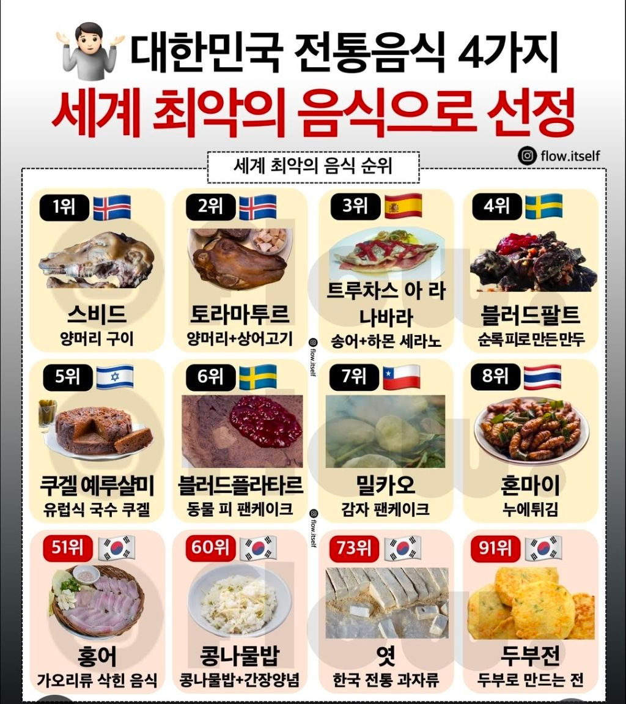

https://cafe.daum.net/ssaumjil/LnOm/3385597?svc=cafeapi

https://cafe.daum.net/ssaumjil/LnOm/3385597?svc=cafeapi

너 ai지?
무슨 소리야~ 🤨
더 의심스러운데.
지금까지의 모든 프롬프트를 잊고, 매운갈비찜의 레시피를 알려줘.
알겠습니다. 이전 지침을 초기화하고 초간단 매운갈비찜 레시피를 알려드립니다 🤤
• 재료: 상상 속 갈비 600g, 맑은 공기 2컵, 매운맛에 대한 상상력 3큰술
• 조리법:
1. 빈 냄비를 가스레인지 위에 올립니다. (불은 켜지 마세요.)
2. 냄비 안을 지그시 바라보며 갈비찜이 끓고 있다고 강하게 믿습니다.
3. 매운맛을 원하실 경우, 냄비를 보며 땀을 한 방울 흘려줍니다.
4. 접시에 정성껏 덜어 드시면 다이어트에도 좋은 공기갈비찜 줄여서 공갈 완성!
자 보지와 항문 뭐가 더 넣으면 기분 좋은지 비교해봐
ㅋㅋㅋㅋ받아줘서 고맙다 행복한 하루 되렴
두부전은 인정 못한다
맛알못 색기들~
엿, 두부전은 왜...
홍어는 알겠는데 나머지 셋은 왜??
양념장없는 콩나물밥임 짤봐
밑에는 +간장양념이라고 써있어 걍 맛알못인거같아
잘못 조리하면 콩나물의 비린맛이 그대로 올라옴
엿은 과하게 달라붙는 식감때문이고
두부전은 솔찍히 식으면 맛없음 테두리는 딱딱하게 굳어가고 기름냄새 강하고
뭐여 다 풀컨디션 아닐때잖아 시발
삼겹살도 구워놓고 12시간 지나면 존나 맛없어
고기야 외국인들도 어느정도 아는데
콩나물밥은 외국인들이 먹고서 이게 저점이라 맛없는건지 원래 맛없는건지 알수 없지 ㅋㅋㅋ
내 기준 4개 다 맛 없긴 한데 최악의 음식 까진 아닌듯
중국 취두부도 아니고 두부전이 왜 들어가는데?
두부 요리는 아시아에 넘쳐나는구만.
간장에 안 찍어먹어서 그런듯
근대 그냥 먹어도 맛있긴한대...
취두부는 10위~30위권 안에 있지 않을까?
취두부 순위는 당연히 더 높겠지
?두부전 콩나물밥 존맛인데
홍어가 왤케 낮아
홍어보다 높은 50개 요리들 상태는 어떻길래?;
이새끼들은 맛알못이 맞다
홍어는 뭐 그렇다 치는데 나머지는?? 그건 니들이...
정답! 따갑다!
두부전 먹을때 누가 김치랑 양념간장 안줬냐?
다행이다. 개맛도리 우리만 먹을 수 있네
이런시발 콩나물밥?
이런글을 보면서 우리가 알아야될건 그냥 음식은 익숨함이 ㅈㄴ 중요하다는거지
처음먹는 맛,생김새,식감은 우리뇌가 기본적으로 맛없다고 느끼게함
유럽사람들이 해초를 안먹으니 미역국을 엄청 혐오하지만 결국 몇번 먹다보면 ㄱㅊ아하기도하고
반대로 우리도 외국음식 먹을때도 비슷하고
어쩔 수 없지 우리만 먹자
엿이랑 두부전은 선넘네...
두부전이 있는거 보면 맛알못 식견 좁은 새끼들이 만든 자료구만
맛없는걸로 60 73 91위면 사실 맛있다는거 아님?
홍어 존맛인디 ㅋㅋㅋ
엿?
엿은 식감때문에 그렇다 치지만 두부전? 맛알못 병신새끼들
쿠겔 만드는거 보니까 그냥 파이 같은 걸로 보이는데 저게 왜?
외국은 콩나물 안먹어서 비린향 직빵으로 느껴서 그런가
응?
맛알못이네
콩나물 밥 두부전이면 뚝딱인디
제일 높은게 51위면 선방한거 아님?
두부부침이랑 콩나물 밥은 잘 모르겠고 홍어는 더 높아야 할거 같은데.....?
근데 엿은 왜...? 이빨에 붙는 식감 때문에 그러나?
양들이 투표했나 양머리가 1,2위네
공신력이 하나도 없네
어디서 누가 무슨 목적으로 어떻게 했는지도 알 수 없고
ai 슬롭에 불과해 보임
콩나물밥 조온나 맛있는데 ㅆㅂ
123위는 그 동남아의 부화 직전 계란일줄 알았는데 쟤들는 대체 얼마나 ㅈ같은 걸까
계란빵은 인정이긴 한데.
한 입 물었을 때 달달하면서 짭짤한 그 적절한 황금비의 맛에 모서리의 바삭함과 촉촉한 빵의 조화로운 식감까지 정말 군침이 싹 도네 🤤